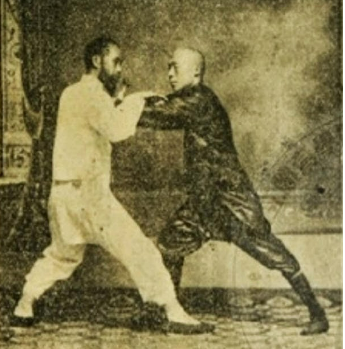
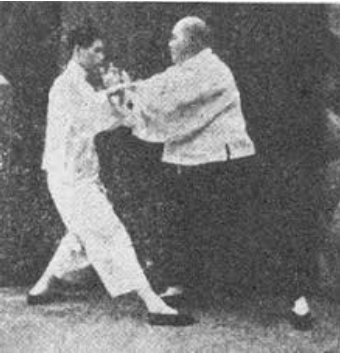

Las 4 características
Zhan 沾, Lian 黏, Nian 連, Sui 随
En este artículo se presenta una interpretación de estas cuatro características
desde el punto de vista del método Mian Quan, explicando cómo se entienden y cómo
se aplican dentro de este enfoque en el trabajo de Tui Shou.

Gong Fu - Nei Jia
¿Qué es Wei Jia y Nei Jia?
(¿Estilos externos o internos?)
Este artículo expone, desde el punto de vista del método Mian Quan, las
características esenciales que se atribuyen a cada uno de estos enfoques,
con el fin de mostrar
de manera clara en qué se diferencian dentro del propio marco del método.

Los 4 niveles
En este artículo se presenta una aproximación divulgativa a estos niveles de trabajo tal como se entienden dentro del método Mian Quan. Se explica cómo se relacionan entre sí y cómo pueden ayudar a organizar la práctica de Tai Ji Quan de manera ordenada y coherente dentro de este enfoque.
Leer artículo
Gong Fu de Gong Vs Gong Fu de Fa
¿Es lo mismo trabajar con las ocho fuerzas que trabajar con aplicaciones técnicas?
En este artículo se presenta una reflexión, desde el enfoque del método Mian Quan,
sobre las diferencias entre un trabajo de Gong Fu basado en las ocho fuerzas y
otro centrado en aplicaciones técnicas. Se describen los aspectos que caracterizan
cada planteamiento y cómo se distinguen dentro de la lógica práctica del método.